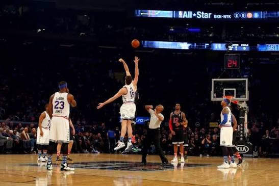

Principais fundamentos
Drible
É o movimento de quicar a bola no chão para se deslocar pela quadra e escapar da marcação.
Passe
É a maneira de enviar a bola para um companheiro de equipe. Pode ser feito com as duas mãos, com uma mão ou quicando a bola.
Arremesso
É o movimento usado para tentar marcar pontos na cesta adversária.
Defesa
Consiste em impedir o avanço do adversário e dificultar seus passes e arremessos.
